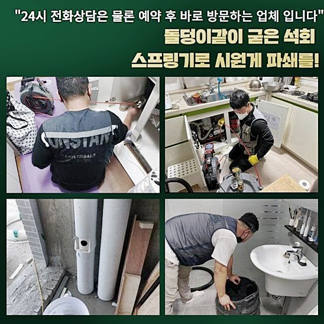
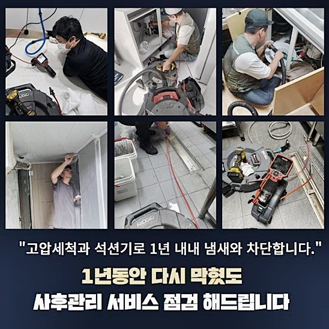
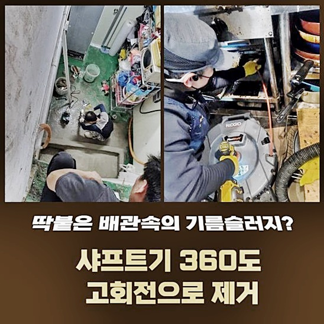
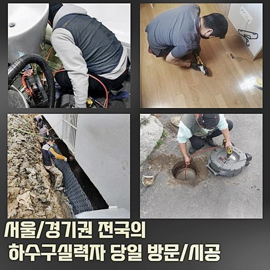
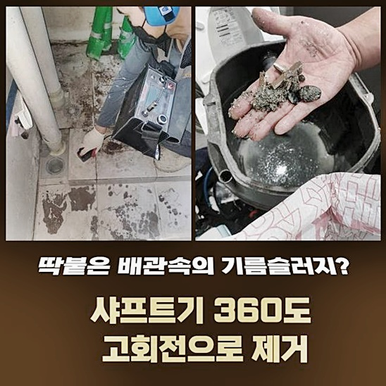
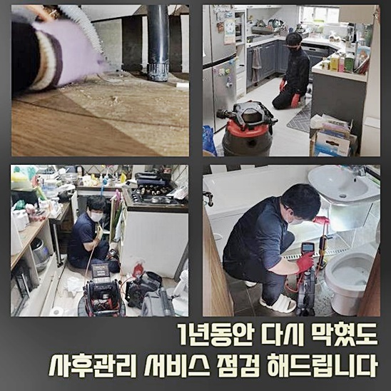

🏠 연수구 선학동씽크대막힘 동춘동 하수구뚫어주는곳 부속수리
용인시 처인구 배관막힘 전문 시공 후기

📋 작업 개요
- 위치: 용인시 처인구, 수원시 영통구, 화성시 동탄
- 서비스 유형: 배관막힘, 하수구청소, 고압세척, 내시경점검
- 작업 일시:
- 업체명: 하수구수사대 (010-5615-2118)
🔍 문제 상황
연수구 선학동씽크대막힘 동춘동 하수구뚫어주는곳 부속수리
모든 생활공간 내부에서 물을 전혀 사용하지 못하면 끔찍한 문제들을 초래할 수 있습니다
그렇기에 물을 쓰면서 배출해주는 관로의 케어 문제도 필히 신경써야 하는데요
다 처리될거라는 낙천적 자세로 다른 물질들을 폐기한다면 시간이 지나면 하수구막힘이라는 절체절명의 순간을 마주할 수 있습니다
이번 소개할 장소는 식당이었는데 하수구가 고장나서 영업이 힘들다는 상담 내역을 접수하고 빠르게 작업지로 향했습니다
특히나 영업장에서 관로의 차단이 일어나면 커다란 손실을 가져다주니 조속히 손봐드리려고 늦지 않게 도착했습니다
이런 어려움이 형성될 수 밖에 없었던 문제점을 짚어내고 대략 얼마정도 나올지에 대해서도 안내를 드렸어요
고개를 끄덕이시며 얼른 수습을 해달라고 말씀하셔서 전문적 서비스를 시행했습니다
그저 기기를 들이대는게 아니라 이렇게 막혀버릴 수 밖에 없던 이유를 판별해야 하므로 배관 내면부를 살펴보았습니다
이 절차를 생략하지 않는 이유는 보다 정확한 데이터를 얻어서 설치되어있는 식당의 준설이 망가뜨리지 않게 대책을 세우기 위해서입니다
하수의 역행까지 일어나서 전쟁터를 방불케 했지만 적당히 뚫는데만 연연하여 급한 부위만 뚫어낸다면 작업을 받고도 조만간 복사 붙여넣기한 듯 같은 상황이 재차 찾아오게 될 수 있어요

🔎 원인 분석
💡 전문가 진단: 정밀 진단 장비를 사용하여 슬러지의 고착 여부를 판명하고 타격/세척 작업을 실시했습니다.
고객님께 같은 고통을 안드리려면 개선 속도에만 집중하는 것이 아니라 이슈가 생긴 원인을 제대로 색출해서 누락분이 없게끔 말끔하게 만들어 드려야 합니다
막힘에다 역류까지 되는 증상까지도 동반된다면 한시가 급한 긴급 사안이라고 여기실테지만 종종 비용도 시간도 없다고 생각하며 내버려 두시는 분들도 계세요
이렇게 파이프 속에 이물질이 쌓여가다보면 추후 까다로운 작업 절차를 불가피하게 받아야만 할테니 부담감이 아무래도 커집니다
책임감있게 담당해 주는 곳을 결정하는 것과 발견 즉시 전화하는 행동 이 두가지를 필히 생각해야 적은 부담으로 처리가 됩니다
식당의 하수구 곤란을 정돈해 주려고 배관 전용 내시경 장치를 넣어서 무슨 상황인지를 점검하니 중간 정도의 깊이에 오염 요소들이 들러붙어서 마비되기에 이른겁니다
물의 흐름세를 회복시키려 물을 쏴서 내부를 정돈하는 식의 청결관리를 거쳐서 막힘을 처리할 수 있었어요
관찰해본 뒤 오염된 범주와 고여있는 물질의 속성에 따라 투입되는 청소 작업의 정체도 덩달아 변화해요
평수가 넉넉한 식당이었다는 점 외에도 청소해야하는 하수관의 폭도 넓다고 보였기에 복잡한 시공이 될 것 같았으나 윗 쪽부터 접근하여 점진적으로 정돈해 줍니다!
특화된 카메라를 작동시킨 후 안쪽과 야외 맨홀까지 분석했더니 기름층과 각종 음식물 잔해들이 머물러서 가득 채워진 상황이었죠
상가건물에서 메인으로 발견되는 대상물들인데 이것들이 한꺼번에 발생한 만큼 심각도가 더 짙어지면서 더 어려운 상황이 빚어진겁니다
내면에 끼인 오염원이 무엇일지 고객님께 알려드린 뒤에 뚫는 툴을 활용해서 물이 흘러가도록 해주었어요
운행했던 차량에서 필요한 장비들을 챙겨서 시공을 준비해 줍니다

🔧 작업 과정
규모가 넓은 축의 작업지라면 현장이라면 옥외 배수시설도 여러 개가 있을 수 있어요
건물에서 메인 배수로까지 옮겨가는 동시에 개별적인 그레이팅 덮개들을 오픈하면서 어떤 구간들이 문제를 안고있나 확정짓기까지는 오래 걸려요!
거꾸로 탐색을 진행하여 아예 바깥쪽 하수관로부터 세정 작업을 해주고 있어요
지금까지는 스프링기기로 일단 사용은 가능한 수준으로 유지를 하실 수 있었다곤 하지만 이는 하수관에 자극을 적립되게 하는 할지도 모른다는 것을 이해하고 되도록 자극을 피하셔야 해요!
상가에 들어가서 진단해보면 각종 클리너나 도구를 마구 투입하시면서 뚫음을 시도하시는데 시간과 노력을 투자하여 영구적으로 나아지면 좋겠지만 현실은 다릅니다
대다수의 케이스를 분석해보면 쳇바퀴 구르듯 재발을 피하지 못해요
괜히 비지땀 흘리게 될 수 있으니 저렴한 시공 비용으로 보완 조치를 해주는 곳에 의뢰해서 만족스러운 결과물을 받는 것이 시간 비용을 아끼는 격입니다
오늘 작업지도 지금까지 혼자 계속 케어를 해주시다가 결국 고객님 손을 떠난 일이라 판단되어 지체없이 접수를 해주셨던 겁니다
관통기나 뚫어뻥 등으로는 배수되는 물의 속도도 느릿할테고 내부에 고여있었던 잔해들 마저도 소거시키기가 힘들어요
긴 노즐의 끝에 달린 카메라 장치로 찾아낸 이물질이 강하게 결합한 지대에 뚫는 장비를 배치해서 조금씩 뭉친 곳을 와해시켜요
장기간 정체되어서 그런지 원활하게 분리되지 않았으나 이는 예상했던 바라서 심한 쪽을 집중적으로 공격합니다
파쇄하고 건져올리는 과정을 책임감있게 담당해준 결과로 통로를 확보할 수 있었고 다음부터는 봇물 터지듯 특정 기점에 달라붙어 있었던 찌꺼기들이 모습을 드러냈습니다
도중에 딱 걸리면서 순탄하지 못한 고비도 있었지만 당황하지 않고 바로 배관 카메라를 써서 장애물의 상태를 보고 극복하도록 도와줄 수 있는 여러가지 방책과 툴을 아낌없이 썼습니다
지연되던 측면을 뚫어서 중앙시스템까지의 길을 열어줬습니다
건물의 마당으로 향하여 설계과정을 통해 설립되어 있는 빗물받이를 곳곳에 장착해둔 지면에 도착해서 덮개를 개방해서 오염된 섹션을 파악하여 고압세척에 돌입합니다
실내를 청소해도 완치가 안되다보니 바깥까지 오염됐을 거라는 추론을 했기 때문에 설명을 드리고 뒷쪽도 같이 동반 시공을 해드렸어요
기존에 얘기된 부분은 아니었지만 이렇게 야외의 집수정 시설을 체크하지 않았으면 재차 이어진 방문을 해서 처리해야 했을만큼 여러 이물질들이 뭉쳐있었어요
실내에 난 하수구를 뚫고나서도 하수가 이동하긴 했었지만 뒤쪽까지 손봐드리고 나서야 확실히 통수가 이뤄지네요
추가적인 금액 부담 없이 작업을 제공해 드리는 서비스의 일환까지도 마찬가지로 사전에 이야기를 드리고 작업을 실시하고 있으니 지나치게 강행하면 어쩌냐는 등의 불필요한 걱정은 마세요


✅ 작업 완료
시공을 이어갈수록 입이 떡 벌어질 정도로 적체된 각종 찌꺼기들이 범람했지만 굴하지 않고 모든 정화시설들을 확인하면서 청소를 도맡아 드렸기에 편안하게 이용하실 수 있게 됐어요
막힘 없는 상태를 유지할 수 있는 케어법을 알려드리니 잘 지켜나가겠다고 하셨고 시기마다 전문적 진단을 부탁한다고 하셨습니다!
튀어나온 잔해들로 오염된 작업지를 물로 씻어내렸어요
저희는 과하지 않은 하수구 청소 요금으로 잔뜩 오염된 하수구 시설을 극복을 시켜드리니 이제는 막막한 마음을 안고 혼자서 시도하시지는 않으셨으면 합니다
개선의 기미가 보일 수 있지만 여러 차례 거듭된다면 비전문적인 행동들이 계속 쌓이다가 하수관이 치명적으로 무너져서 물이 새어나가는 사건까지도 생길 수 있다는 점을 염두에 두시기 바랍니다



⚠️ 하수구 배관 막힘 예방 및 관리 가이드
- ✅ 머리카락, 비닐, 물티슈 등 물에 분해되지 않는 이물질은 절대 흘려보내지 마세요.
- ✅ 기름기 많은 식기는 설거지 전 키친타올로 먼저 기름때를 닦아내세요.
- ✅ 주기적으로 배수구에 뜨거운 물을 가득 부어주어 유지방 고착을 방지하세요.
- ✅ 작업 후 1년 이내 재발 시 무상 A/S 보증 서비스를 제공합니다.
💡 핵심 정리
- 확실한 장비 작업(내시경 점검 및 샤프트 스케일링)으로 원인을 뿌리 뽑습니다.
- 작업 후 1년 이내에 동일한 부위 재발 시 100% 무상 A/S 서비스를 보장합니다.
- 서울 · 경기 · 인천 전 지역에 24시간 언제든 긴급 출동할 수 있도록 항시 대기 중입니다.
❓ 자주 묻는 질문 (FAQ)
🚨 용인시 처인구 배관막힘 문제로 고민이신가요?
정확한 원인 진단과 확실한 시공으로 재발 없는 해결을 약속드립니다.
24시간 긴급 출동 | 서울 · 경기 · 인천 전지역 | 1년 내 재발 시 무상 A/S